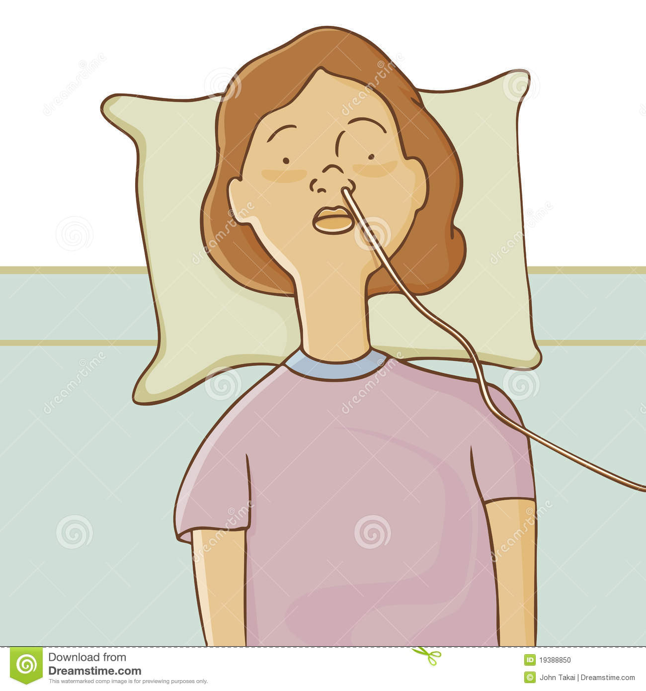

Kids with cystic fibrosis will need to make appointments with doctors who can monitor thier health condition. The doctors will check their food intake and other treatments.
Mechanical devices also can help loosen lung mucus. These include a vibrating vest or a tube or mask you breathe into.
Your doctor may recommend a long-term program that may improve your lung function and overall well-being. Pulmonary rehabilitation is usually done on an outpatient basis and may include:
The child's doctor may recommend surgery to remove nasal polyps that obstruct breathing.
The doctor will recomend a child to breath pure oxygen to if there the child has problems.
Mucus may be suctioned from obstructed airways through an endoscope.
Kids with cystic fibrosis cannot digest food very well. Therfore a feeding tube can be inserted in your nose and guided to your stomach, or it may be surgically implanted into the tummy.
If a blockage develops in your bowel, you may need surgery to remove it. If it is damaged, surgery can correct it.
Kids with severe lung problems will need to do a lung transplant to correct the problem